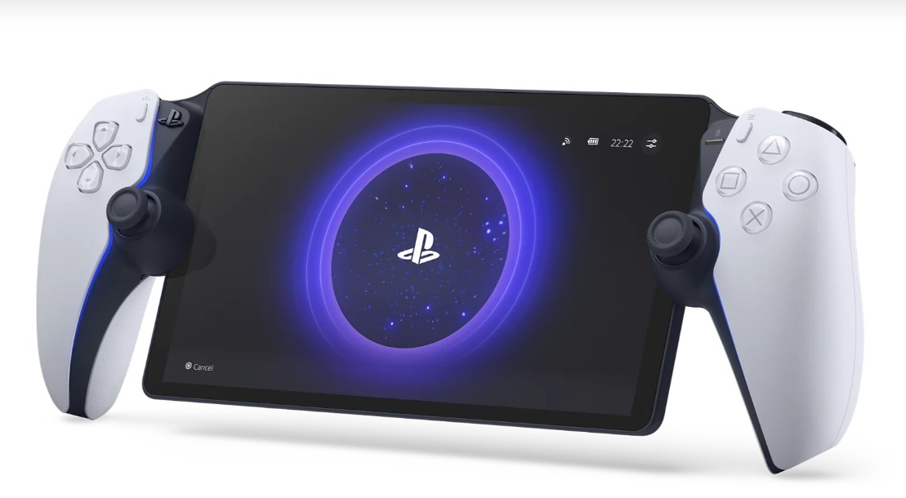
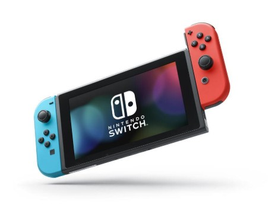

Products


1. PlayStation’s official website showcases the latest consoles, games, accessories, and membership services, highlighting the PlayStation 5 family and immersive gaming experiences. It also lets visitors explore new releases, special promotions, and PlayStation Plus benefits for playing PS5, PS4, and classic titles online.
2. The official Xbox website highlights Xbox consoles, games, accessories, and services like Xbox Game Pass, letting visitors explore hardware, browse game libraries, and join online gaming communities. It also provides information about playing Xbox on various devices, including consoles, PC, mobile and cloud gaming options.
3. The Nintendo Switch is a hybrid gaming console that lets you play games at home on your TV, on a tabletop screen, or in handheld mode with detachable Joy-Con controllers. It adapts to your lifestyle so you can enjoy a wide range of games anytime, anywhere, whether alone or with friends.
Celtec: Star Catcher
Move with ← → keys and catch the stars!
Score: 0
Services
Nintendo’s official UK website highlights its range of games, hardware like the Nintendo Switch systems, and online services such as the Nintendo eShop and Nintendo Switch Online, where players can find new releases, updates, and special features. It showcases the latest news, game titles, and ways to enjoy Nintendo entertainment across different devices and platforms.